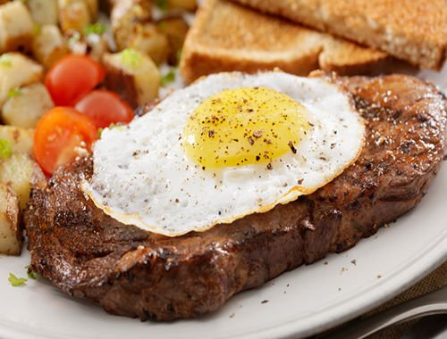
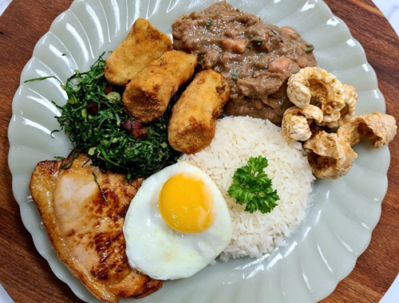

Região Sudeste
Historia
A culinária típica da região é marcada pelo uso de produtos essenciais, como feijão, milho, mandioca (também
conhecida como aipim), arroz, ovos e porco. O uso desses ingredientes originou-se do contato dos colonizadores e
jesuítas com os povos indígenas que já habitavam a região
Pão de Queijo

- Ele está presente no Brasil inteiro, mas um mineiro que se preze vai dizer que o de Minas Gerais é sempre
melhor. E estará coberto de razão: qualquer pão de queijo de boteco em BH costuma ser melhor que as versões mais
gourmetizadas de São Paulo ou do Rio. Em Minas, você pode degustá-lo puro no Mercado Central ou no Velho Mercado
Novo de BH, ou recheado em alguns dos melhores cafés de Belo Horizonte.
Bife a Cavalo

- A receita original veio da França, na Europa, mas ganhou espaço nos restaurantes do Sudeste e mais ainda do
Rio de Janeiro. Se você for comer e pedir um Bife a Cavalo, o garçom irá trazer um bife de carne grelhado com
ovos fritos por cima, e provavelmente acompanhado com batata frita e arroz branco. O nome do prato vem de
teorias antigas, onde as pessoas achavam a combinação do bife com ovo parecida com uma sela de montaria em cima
de um cavalo, então por isso o apelidaram dessa forma.
Frango com quiabo
- Aqui está uma combinação barata e com sabor sensacional. O prato é característico de Minas Gerais e não pode
ser cozinhado com qualquer tipo de frango, para a receita ser original é necessário que seja feito com frango
caipira, que é um dos ingredientes clássicos do estado. O prato típico se trata de frango ensopado junto com
quiabos. Muitas pessoas têm “preconceito” com o quiabo, por muitas vezes ter uma textura com “baba”, por isso é
preciso dar o ponto certo do ingrediente. Inclusive, a história dessa planta é bem interessante. Dizem por aí
que ela foi trazida da África, junto com os escravos, que colocavam suas sementes no bolso como uma garantia de
alimento, já que o quiabo tem o crescimento rápido e prático. Legal né? Comida também é cultura.
Bauru
- Mais um dos pratos típicos do Sudeste, porém esse se trata de um sanduíche bem conhecido em São Paulo. Ir a
capital paulista e não comer o Bauru, é como não ir! O lanche tem origem na própria cidade e foi criado por
Casimiro Pinto Neto, que na época era frequentador do tradicional bar Ponto Chic, onde foi criado o sanduíche.
Ele tinha como apelido o nome Bauru (local onde nasceu) e por isso, o sanduíche foi batizado em sua homenagem. A
receita original tem pão francês com rosbife, fatias de tomate, picles, queijo derretido, orégano e sal a gosto.
Olha que legal! Em dezembro de 2018 o sanduíche foi declarado como patrimônio imaterial do Estado de São Paulo.
Moqueca Capixaba

- Com certeza você já ouviu falar desse prato, mas os capixabas se orgulham em dizer que a verdadeira moqueca
está no Espírito Santo e não no Nordeste. A Moqueca Capixaba realmente é o carro-chefe do estado e trata-se de
um cozido de peixe, frutos do mar e vegetais, preparado em uma panela de barro e temperado com urucum e coentro,
normalmente servido com arroz e pirão. Dizem que a origem desse prato típico é uma mistura das culinárias
indígena, portuguesa e africana.
Virado Paulista

- Esse prato típico é bem antigo e vem lá da época do Brasil Colônia, pois devido as longas viagens era preciso
uma refeição que proporcionasse a sustância que só o Virado à Paulista poderia ter. Hoje, o prato, como o
próprio nome já diz, é muito comum em São Paulo e também é conhecido como o famoso PF (Prato Feito). Na
composição do prato estão: arroz, feijão engrossado com farinha de mandioca, couve em tiras, ovo frito, banana
frita, linguiça, bisteca e torresmo crocante. Bem light, né?